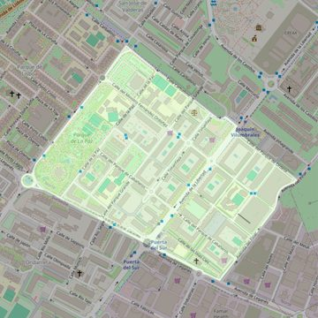

Inmaculada Concepción de Nuestra Señora
- Arciprestazgo
- Alcorcón
- Población
- Alcorcón
- Dirección postal
- c/ Islas Cies, 4
- Código postal
- 28924
- Extensión
- 0,56 km² (56 ha)
- Teléfono
- 916 190 313
- Información demográfica
- De la parroquia · De la población (Alcorcón) · Del arciprestazgo (Alcorcón)


Descargar mapaLímites según decreto
"Partiendo de la confluencia de la avenida Alcalde José Aranda con la calle Carballino, arrancan por el eje de la calle Carballino (en dirección sureste); siguen por el eje de la avenida de la Libertad (en dirección suroeste), por el eje de la calle Parque Ordesa (en dirección sureste), por el eje de la avenida El Pinar (en dirección noreste), por el límite del término municipal Alcorcón-Leganés, (en dirección sureste), por el eje de la avenida Leganés (en dirección noroeste), por el eje de la avenida Alcalde José Aranda (en dirección noreste) hasta la confluencia con la calle Carballino, punto de partida". (Decreto de actualización de límites, 21-6-2005. B.O. de julio-agosto de 2005, pág. 793: en el B.O. está mal)